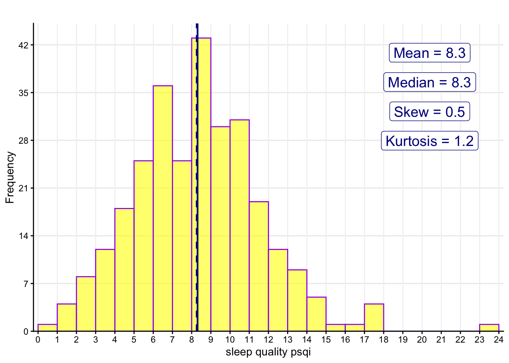
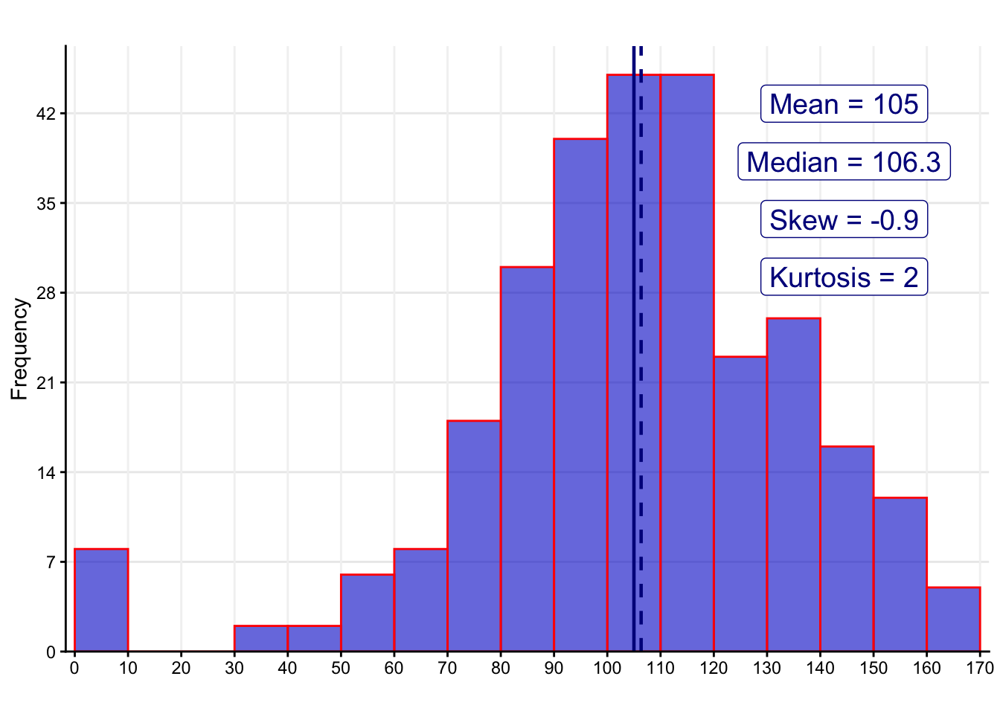
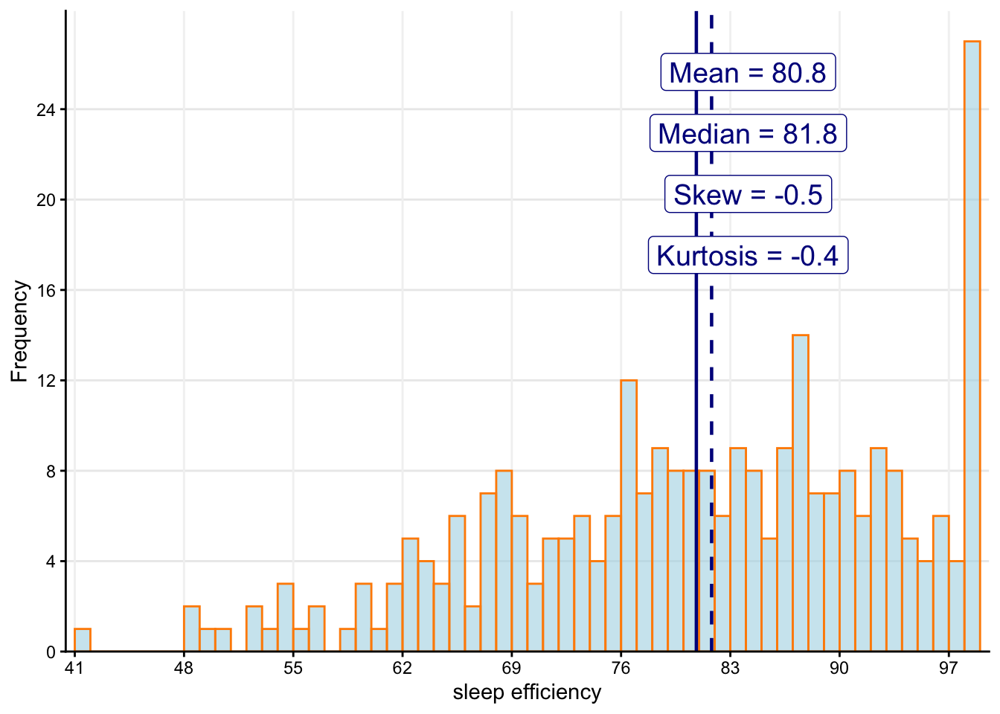
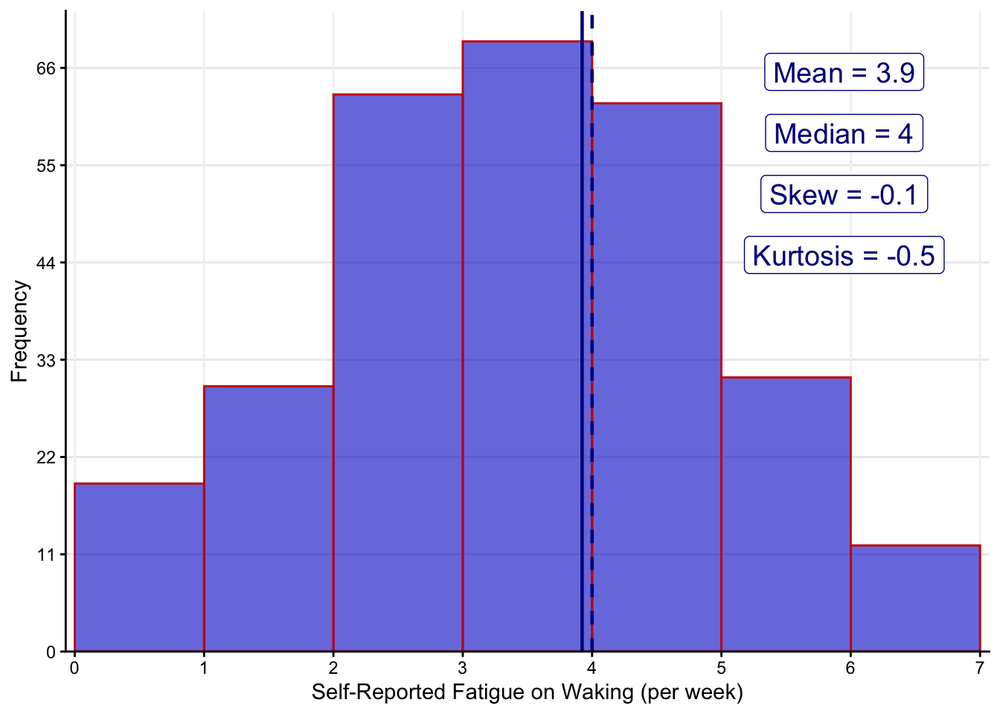
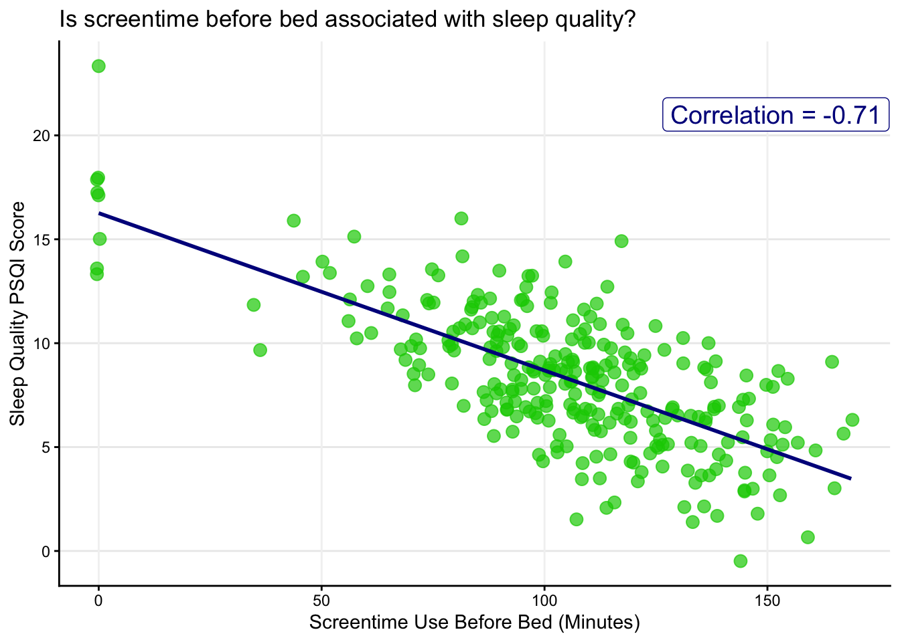
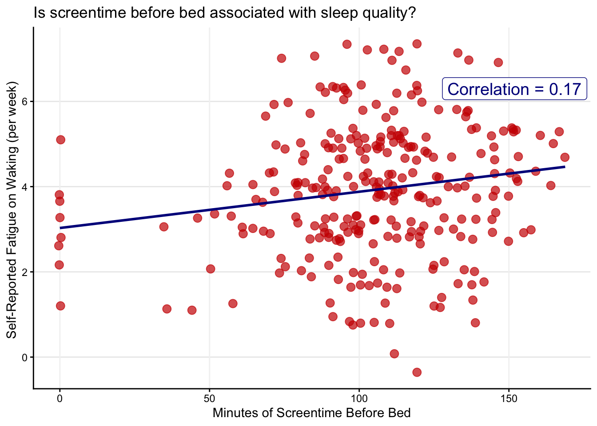
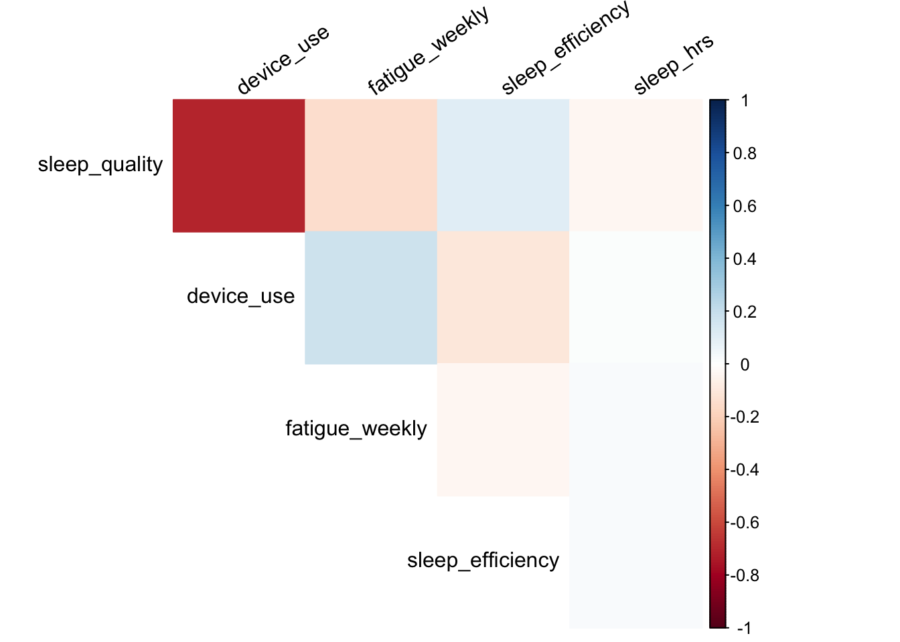
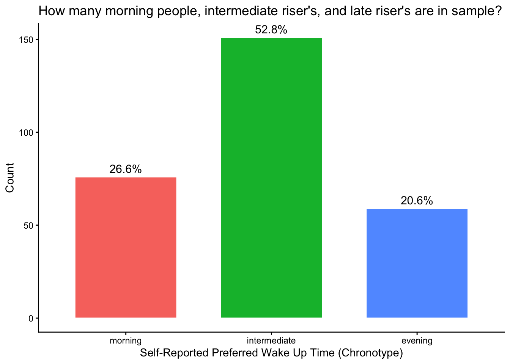
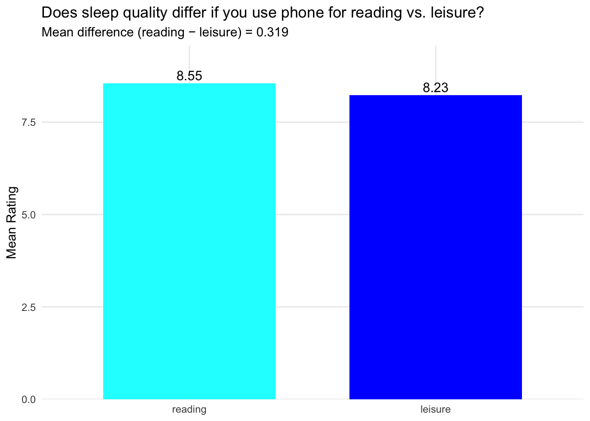
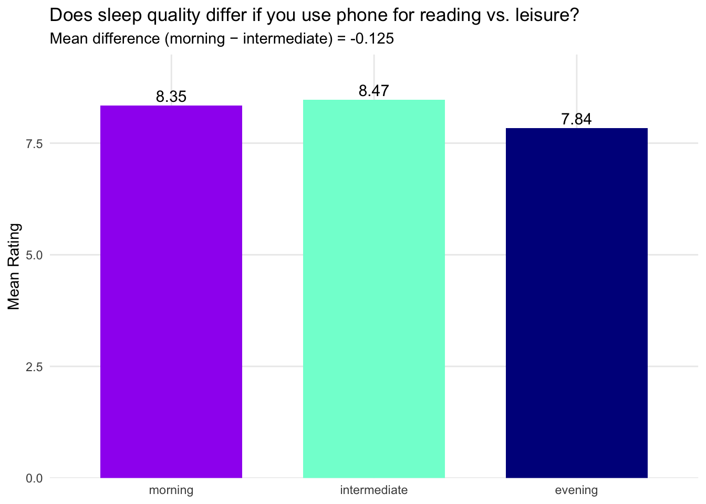

library(tidyverse)
library(janitor)
library(report)
library(gt)
library(psych)
library(sjPlot)
library(corrplot)
source("load_plot_functions.R")Step-1 of Project Analyses - Exploration
Example [INCOMPLETE TEMPLATE] - Screen Use & Sleep Quality
Data source is simulated or fabricated to reflect finding of following research study:
Jniene et al. (2019). Perception of sleep disturbances due to bedtime use of blue light‐emitting devices and its impact on habits and sleep quality among young medical students.
Read in data & prepare for analyses
Read in data
raw_data <- read_csv(here("data", "blue_light_sleep_sim25.csv")) %>%
clean_names()Prepare data
sleep_data <- raw_data %>%
select(
sleep_quality = sleep_quality_psqi,
sleep_hrs = sleep_duration_hours,
fatigue_weekly = fatigue_on_waking_perweek,
device_use = device_use_minutes_bedtime,
sleep_efficiency = sleep_efficiency_pct,
age, room_lights_off, sex, use_reason, chronotype) %>%
mutate(
female = factor(sex, levels = c("male","female")),
use_reason = factor(use_reason, levels = c("reading","leisure")),
chronotype = factor(chronotype, levels = c("morning","intermediate","evening"))
)Take a look at descriptive statistics using describe()
- Descriptive stats are useful for describing continuous or ordinal variables
- Such as: Mean, median, mode, range, skew, kurtosis…
describe()will return an error if you include non-numeric variables- The ‘mean’ of a binary variable will the portion of 1’s for variable
- Descriptive stats do not work with nominal/categorical variables
sleep_data %>%
select(sleep_quality,
sleep_hrs,
fatigue_weekly,
device_use,
age, room_lights_off) %>%
describe() vars n mean sd median trimmed mad min max range
sleep_quality 1 286 8.31 3.32 8.26 8.22 3.05 -0.75 23.42 24.18
sleep_hrs 2 286 6.12 1.27 6.14 6.12 1.21 3.50 10.00 6.50
fatigue_weekly 3 286 3.92 1.52 4.00 3.94 1.48 0.00 7.00 7.00
device_use 4 286 105.00 31.06 106.35 106.96 25.06 0.00 168.80 168.80
age 5 286 20.65 1.66 21.00 20.61 1.48 18.00 26.00 8.00
room_lights_off 6 286 0.75 0.43 1.00 0.81 0.00 0.00 1.00 1.00
skew kurtosis se
sleep_quality 0.47 1.22 0.20
sleep_hrs 0.13 0.02 0.07
fatigue_weekly -0.10 -0.46 0.09
device_use -0.92 1.99 1.84
age 0.30 -0.33 0.10
room_lights_off -1.14 -0.71 0.03Look at distributions of continuous variables
- Use
hist_plot()to look at distribution or shape of variables - Works well with continuous or ordinal variables (e.g., Likert scales)
- You should plot distributions of ALL variables included in your analyses
Plot distribution of sleep_quality with a histogram
hist_plot(
data = sleep_data,
binwidth=1,
x_var = sleep_quality,
x_label = "sleep quality psqi",
fill = "yellow", color = "purple",
break_min =0, break_max =24 , break_by = 1,
mean_line = TRUE, median_line = TRUE,
skew_value = TRUE, kurtosis_value = TRUE,
title = "")
Plot distribution of device_use with a histogram
hist_plot(
data = sleep_data,
binwidth=10,
x_var = device_use,
x_label = "",
fill = "blue3", color = "red",
break_min =0, break_max =170 , break_by = 10,
mean_line = TRUE, median_line = TRUE,
skew_value = TRUE, kurtosis_value = TRUE,
title = ""
)
Plot distribution of sleep_efficiency with a histogram
hist_plot(
data = sleep_data,
binwidth=1,
x_var = sleep_efficiency,
x_label = "sleep efficiency",
fill = "lightblue", color = "darkorange",
break_min = TRUE, median_line = TRUE,
skew_value = TRUE, kurtosis_value = TRUE,
mean_line = TRUE,
)
Plot distribution of fatigue_weekly with a histogram
hist_plot(
data = sleep_data,
binwidth=1,
x_var = fatigue_weekly,
x_label = "Self-Reported Fatigue on Waking (per week)",
fill = "blue3", color = "red3",
break_min = TRUE, median_line = TRUE,
skew_value = TRUE, kurtosis_value = TRUE,
mean_line = TRUE)
Look at bivariate associations using scatterplots
- Scatterplots are used to look at associations between two variables
scatter_plot()is best used to describe two continuous and/or ordinal variables- NOTE:
scatter_plot()prints Pearson’srcorrelation but not significance (p)
What is the association between device_use and sleep_quality?
scatter_plot(
data = sleep_data,
x_var = device_use,
x_label = "Screentime Use Before Bed (Minutes)",
y_var = sleep_quality,
y_label = "Sleep Quality PSQI Score",
point_color = "green3",
corr_line = TRUE,
title = "Is screentime before bed associated with sleep quality?"
)
What is the association between device_use and fatigue_weekly?
scatter_plot(
data = sleep_data,
x_var = device_use,
x_label = "Minutes of Screentime Before Bed",
y_var = fatigue_weekly,
y_label = "Self-Reported Fatigue on Waking (per week) ",
point_color = "red3",
corr_line = TRUE,
title = "Is screentime before bed associated with sleep quality?"
)
Explore multiple associations using correlation tables & plots
Make an APA formatted correlation table
corr_vars <- sleep_data %>%
select(sleep_quality, device_use, fatigue_weekly,
sleep_efficiency,
sleep_hrs)
corr_vars %>%
tab_corr(
triangle = "lower",
digits = 2
)| sleep_quality | device_use | fatigue_weekly | sleep_efficiency | sleep_hrs | |
| sleep_quality | |||||
| device_use | -0.71*** | ||||
| fatigue_weekly | -0.14* | 0.17** | |||
| sleep_efficiency | 0.11 | -0.10 | -0.03 | ||
| sleep_hrs | -0.03 | 0.01 | 0.02 | 0.03 | |
| Computed correlation used pearson-method with listwise-deletion. | |||||
Make a correlation plot
corr_matrix <- cor(corr_vars, use = "pairwise.complete.obs",
method = "pearson")
corrplot(
corr_matrix,
method = "color",
type = "upper", diag = FALSE,
tl.col = "black", tl.srt = 35)
Exploring Categorical Variables
- Look at frequencies or counts of categorical variables using
tabyl() - In
tabyl()thenis the count or frequency percenttells you the percent of sample for each level of factor
How many respondents reported sex as males and female?
tabyl(sleep_data$female) sleep_data$female n percent
male 119 0.4160839
female 167 0.5839161What are the counts of early, intermediate, and evening risers (chronotype)?
tabyl(sleep_data$chronotype) sleep_data$chronotype n percent
morning 76 0.2657343
intermediate 151 0.5279720
evening 59 0.2062937Plotting counts of a categorical variable with 2 or more levels using bar_plot()
Plot relative counts of early, intermediate, and evening riser’s in the sample
bar_plot(
data = sleep_data,
x_var = chronotype,
x_label = "Self-Reported Preferred Wake Up Time (Chronotype)",
title = "How many morning people, intermediate riser's, and late riser's are in sample?")
Looking at associations between a continuous var (Y) and categorical predictor (X)
mean_diff_barplot() arguments (inputs): - data: The data object to use for plotting - outcome: The continuous variable you want to plot on the Y-axis - group_var: The categorical factor you want to plot on the X-axis - colors: The number of colors must match number of factor levels
What is the difference in average sleep quality by use_reason (reading vs leisure)?
mean_diff_barplot(
data = sleep_data,
outcome = "sleep_quality",
group_var = "use_reason",
colors = c("cyan", "blue"),
title = "Does sleep quality differ if you use phone for reading vs. leisure?"
)
What is the difference in average sleep quality by chronotype group?
mean_diff_barplot(
data = sleep_data,
outcome = "sleep_quality",
group_var = "chronotype",
colors = c("purple","aquamarine","darkblue"),
title = "Does sleep quality differ if you use phone for reading vs. leisure?"
)